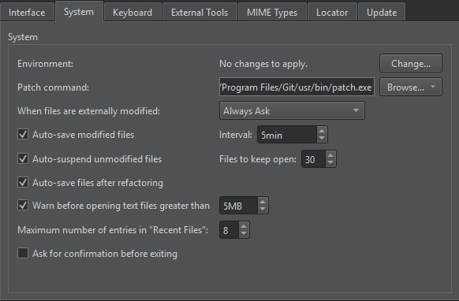

Specify the environment for projects
The environment for a project is determined according to a settings hierarchy:
By default, the environment in which Qt Creator was started is used and modified to include the Qt version. Depending on the selected Qt version, Qt Creator automatically sets the necessary environment variables. You can edit existing environment variables or add, reset, and unset variables based on your project requirements.
The final environment is specified separately for each kit. With project-specific environment settings you can change the environment for all kits that you use to build, deploy, and run the project simultaneously, rather than having to change it separately for each kit.
The changes are stored in the local project-specific CMakeLists.txt.user or .pro.user file, depending on the build system you use, such as CMake or qmake. Therefore, they are not suitable for sharing between developers or development PCs. To share settings, incorporate them into the build system. For example, if you use CMake, make the changes in the CMakeLists.txt file, and if you use qmake, make the changes in the .pro file.
Globally change the environment
To globally change the environment from the one in which Qt Creator is started, select Preferences > Environment > System, and then select Change in Environment.

Change the environment for a project
To change the system environment for a project from the one in which Qt Creator is started, select Projects > Project Settings > Environment.
You can edit existing environment variables or add, reset, unset, or temporarily disable variables.
Specify the build environment
To specify the build environment to use for a kit, go to Projects > Build Settings and select Build Environment.
To change the values of environment variables for the build environment, select the variable and then select Edit. Enter the new value in the editor on the righ side.
To add new variables, select Add.
Clear the build environment
To build with a clean system environment, select Clear system environment. Qt Creator discards the current environment, and populates a clean system environment with the environment variables that the compilers and tools need. Therefore, the environment is never totally empty, even after you clear it.
Specify the run environment
Qt Creator automatically selects the environment used for running the application based on the device type. To edit the environment or select another environment, go to Projects > Run Settings and select Environment.
When running on the desktop, the Build Environment is used by default, but you can also use the System Environment without the additions made to the build environment.
Clean the run environment
To run in a clean system environment, select Clean Environment.
Set the environment for all run configurations
To set environment variables for running and debugging applications, so that they don't affect Qt Creator itself, set environment variables for run configurations of all projects:
- Go to Preferences > Build & Run > General.
- Select Change in Application environment.
- Set environment variables in Edit Environment.

For example, set QT_FORCE_STDERR_LOGGING=1 to see application output in Application Output instead of a journal or system log.
Or, set QT_MESSAGE_PATTERN to add information to debugging messages.
Use device environment
When you run applications on a mobile device connected to the computer, Qt Creator fetches information about the Device Environment from the device. Usually, it does not make sense to edit the device environment.
See also Edit environment settings, Configure projects for building, Configure projects for running, and Use Qt Creator variables.